TỔNG QUAN
Vectoria là hệ thống website hỗ trợ học tập và thực hành Đại số tuyến tính, tập trung vào các nội dung về vector và không gian vector. Nền tảng được thiết kế nhằm kết hợp giữa lý thuyết học thuật và công cụ tính toán trực quan, giúp người học vừa nắm vững kiến thức nền tảng vừa có thể quan sát, mô phỏng và kiểm chứng kết quả trong không gian 2D và 3D.
Hệ thống bao gồm hai thành phần chính:
- Trang Tính toán: Cung cấp công cụ khởi tạo vector, thực hiện các phép toán trên vector và giải các bài toán như độc lập tuyến tính, hạng của hệ vector, cơ sở và số chiều, tọa độ của vector trong một cơ sở.
- Trang Kiến thức: Cung cấp nội dung lý thuyết, khái niệm và ví dụ minh họa phục vụ việc tham khảo và củng cố kiến thức.
Vectoria sử dụng hệ thống nhận diện với tông màu xanh dương – trắng, thể hiện định hướng học thuật và công nghệ.
Logo Vectoria mang cấu trúc hình học đối xứng, tượng trưng cho tính hệ thống và nền tảng toán học. Các liên kết thể hiện sự kết nối tri thức, biểu tượng trung tâm đại diện cho trực quan hóa. Tông xanh dương nhấn mạnh tính học thuật và công nghệ.
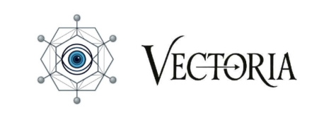
Hệ thống được triển khai trực tuyến tại địa chỉ:
Người dùng có thể truy cập bằng trình duyệt web trên máy tính để sử dụng đầy đủ các chức năng của hệ thống.
Tài liệu này trình bày chi tiết cấu trúc giao diện và hướng dẫn sử dụng từng chức năng của website.
TRANG CHỦ
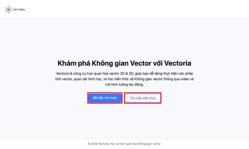
Trang chủ bao gồm: Giới thiệu chung và Các nút điều hướng đến các trang chức năng chính:
Trang tính toán: Khu vực làm việc chính, nơi thực hiện các phép toán và bài toán về vector.
Trang kiến thức: Cung cấp lý thuyết, khái niệm và công thức liên quan để tham khảo.
TRANG TÍNH TOÁN
1. Giao diện chính
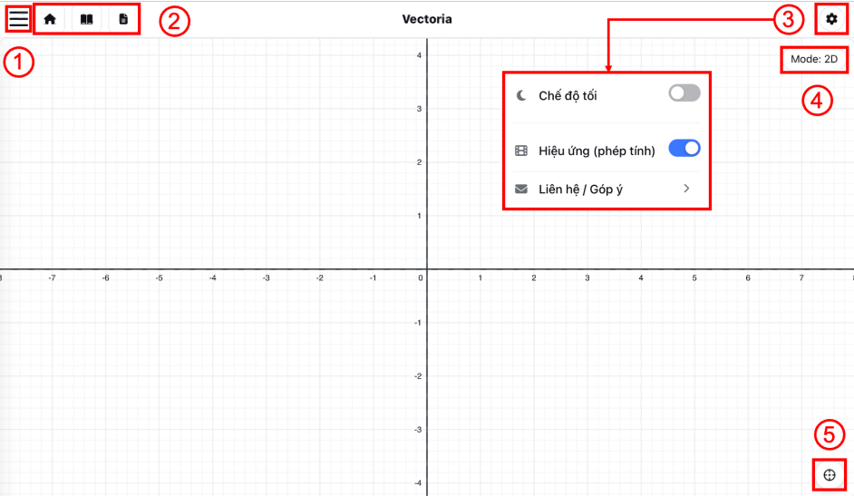
1. Nút mở/ thu gọn thanh công cụ (Menu): Cho phép mở hoặc thu gọn thanh công cụ bên trái màn hình.
2. Nút điều hướng: Nhấn vào biểu tượng Trang chủ để quay về trang chính hoặc chọn biểu tượng Trang kiến thức để xem kiến thức liên quan.
3. Cài đặt: Nhấn vào biểu tượng bánh răng để mở bảng thiết lập hệ thống, bao gồm:
- Chế độ tối: Bật/ Tắt giao diện nền tối.
- Hiệu ứng (phép tính): Bật/ Tắt hiệu ứng minh họa khi thực hiện phép toán.
- Liên hệ/ Góp ý: Gửi phản hồi về hệ thống.
4. Chế độ không gian (Mode): Phần này cho phép bạn có thể chuyển qua lại giữa chiều không gian 2D và 3D để dễ quan sát.
5. Căn giữa/ Reset góc nhìn: Đưa hệ trục tọa độ về vị trí trung tâm (như định dạng ban đầu) sau khi đã xoay hoặc phóng to/ thu nhỏ không gian hiển thị.
2. Giao diện chung công cụ tính toán
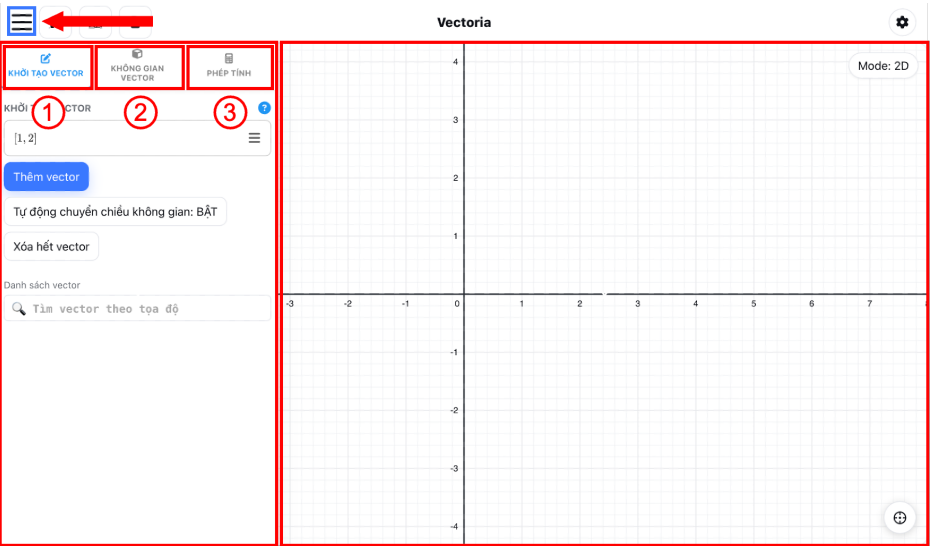
Nhấn vào nút Menu để mở thanh công cụ chức năng bên trái màn hình.
Giao diện tính toán sẽ được chia làm các khu vực rõ ràng, gồm:
Thanh tiêu đề: Hiển thị tên trang và phím tắt tương tự như giao diện chính.
Khu vực làm việc chính: Nơi hiển thị giao diện nhập liệu và kết quả tính toán. Có 3 công cụ chức năng:
- 1. Khởi tạo vector: Trước khi thực hiện tính toán, bạn cần khởi tạo vector. Có thể thêm, chỉnh sửa, xoá, ẩn/ hiện hoặc làm nổi bật vector.
- 2. Không gian vector: Phần này giúp bạn trực quan hoá và gợi ý các lời giải mẫu cho các bài toán liên quan đến không gian vector như là: Xác định độc lập hay phụ thuộc tuyến tính, tìm hạng của hệ vector, tìm cơ sở và số chiều của không gian vector, tìm toạ độ của vector trong cơ sở.
- 3. Phép tính: Ở phần này bạn có thể thực hiện các phép tính toán trên vector như phép cộng 2 vector, phép kéo dãn, phép tìm hình chiếu, phép chuẩn hoá vector, tính tích vô hướng của 2 vector, tìm tích có hướng của 2 vector, tính độ dài vector và tính góc giữa 2 vector.
Khu vực kết quả: Hiển thị kết quả chi tiết sau khi tính toán. Có thể thực hiện thao tác kéo di chuyển và xoay, cũng có thể phóng to thu nhỏ bằng cách lăn nút cuộn của chuột hoặc thao tác phóng to/ thu nhỏ trên touchpad.
3. Chức năng khởi tạo vector
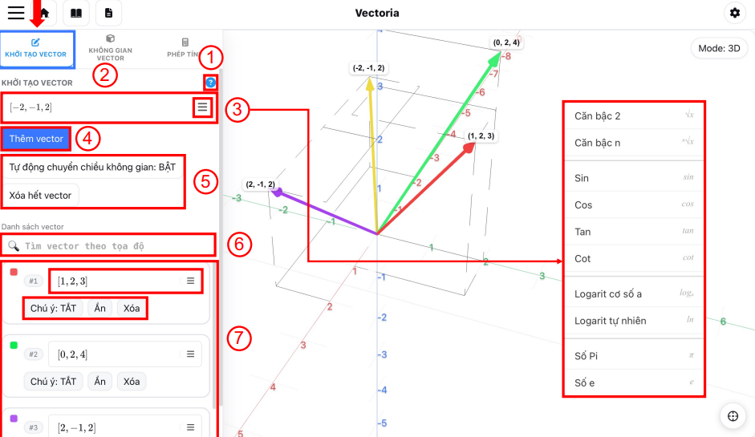
Trước khi thực hiện tính toán, bạn cần khởi tạo vector với các thông tin toạ độ.
1. Biểu tượng Hướng dẫn: Cho phép nhập toạ độ vector cần thêm, tối đa là 3 chiều (2D và 3D). Định dạng hợp lệ là "[x,y,z]" hoặc "x,y,z". Đối với số thực thì dùng dấu chấm (.) để ngăn cách phần thập phân và dùng dấu gạch (/) để biểu diễn phân số.
2. Khu vực nhập toạ độ: Cho phép nhập toạ độ vector cần thêm, tối đa là 3 chiều (2D và 3D).
3. Menu Ký hiệu toán học : Nhấn để mở danh sách các ký hiệu và hàm toán học, bao gồm: Căn bậc hai, Căn bậc n, Sin, Cos, Tan, Cot, Log cơ số a, Log tự nhiên (ln), π, e. Các ký hiệu được chèn trực tiếp vào ô nhập tọa độ.
4. Nút Thêm vector: Sau khi nhập tọa độ hợp lệ, nhấn nút này hoặc phím Enter để vẽ vector đó lên không gian mô phỏng (bên phải màn hình) và thêm vector đó vào danh sách quản lý các vector ở phần (6).
5. Bảng điều khiển: Có thể tuỳ chỉnh:
- Tự động chuyển chiều không gian: Bật/ Tắt chế độ tự động điều hiển thị khi đổi giữa 2D và 3D.
- Xóa hết vector: Xóa toàn bộ vector hiện có trong danh sách và không gian hiển thị.
6. Thanh tìm kiếm: Cho phép tìm nhanh vector trong danh sách theo toạ độ.
7. Danh sách Vector đã tạo: Hiển thị các vector đã được thêm vào hệ thống. Vector được thêm mới sẽ xuất hiện ở cuối danh sách. Mỗi vector sẽ gồm: mã số thứ tự, toạ độ và màu đại diện trên không gian mô phỏng. Các nút chức năng:
- Chú ý: Bật/ Tắt chế độ làm nổi bật vector.
- Ẩn: Tạm thời ẩn vector khỏi không gian hiển thị.
- Xóa: Loại bỏ hoàn toàn vector khỏi hệ thống.
4. Các công cụ liên quan đến chủ đề Không gian vector
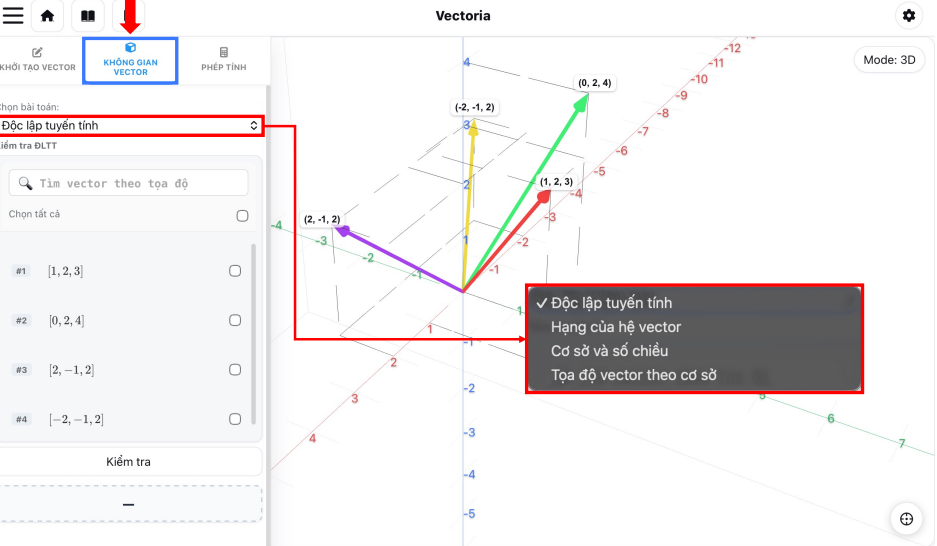
Sau khi thực hiện khởi tạo vector, bạn có thể thực hiện trực quan hoá, tính toán và tham khảo lời giải cho một số bài toán trong không gian vector bằng cách bấm vào chức năng Không gian vector rồi bấm vào Chọn bài toán để chọn dạng bài toán mà bạn muốn thực hiện tính toán.
4.1. Bài toán về Độc lập tuyến tính
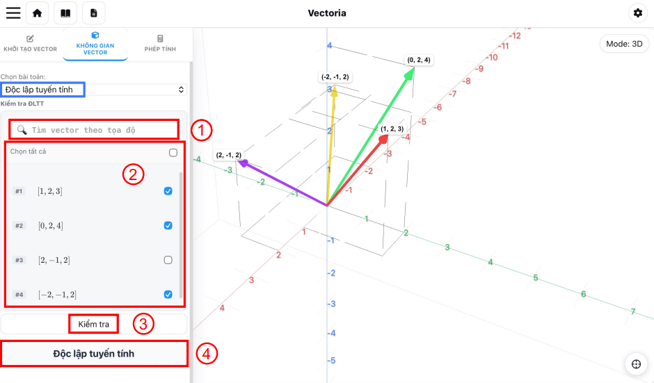
1. Thanh tìm kiếm: Cho phép tìm nhanh vector trong danh sách theo toạ độ. Kết quả tìm kiếm được lọc theo nội dung nhập vào.
2. Khu vực chọn vector: Bạn có thể chọn từng vector bằng cách đánh dấu vào ô tương ứng hoặc chọn tất cả vector bằng tùy chọn Chọn tất cả. Cuộn danh sách để xem đầy đủ các vector. Chỉ các vector được chọn mới được sử dụng trong quá trình kiểm tra.
3. Nút Kiểm tra: Sau khi chọn được hệ vector cần xét, bấm nút này để thực hiện kiểm tra tính độc lập hoặc phụ thuộc tuyến tính.
4. Khu vực kết quả: Hiển thị kết luận về tính độc lập tuyến tính của hệ vector đã chọn.
4.2. Bài toán về Hạng của hệ vector
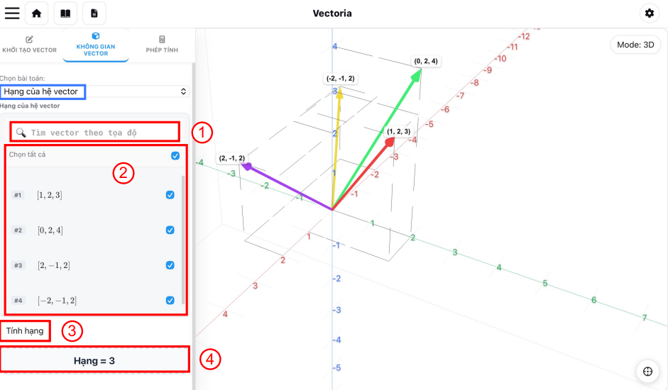
1. Thanh tìm kiếm: Cho phép tìm nhanh vector trong danh sách theo toạ độ. Kết quả tìm kiếm được lọc theo nội dung nhập vào.
2. Khu vực chọn vector: Bạn có thể chọn từng vector bằng cách đánh dấu vào ô tương ứng hoặc chọn tất cả vector bằng tùy chọn Chọn tất cả. Cuộn danh sách để xem đầy đủ các vector. Chỉ các vector được chọn mới được sử dụng trong quá trình kiểm tra.
3. Nút Tính hạng: Sau khi chọn được hệ vector cần xét, bấm nút này để hệ thống để thực hiện tính hạng của hệ vector.
4. Khu vực kết quả: Hiển thị giá trị hạng của hệ vector đã chọn. Giá trị hạng là số nguyên không âm, phản ánh số vector độc lập tuyến tính tối đa trong hệ.
4.3. Bài toán về Cơ sở và số chiều
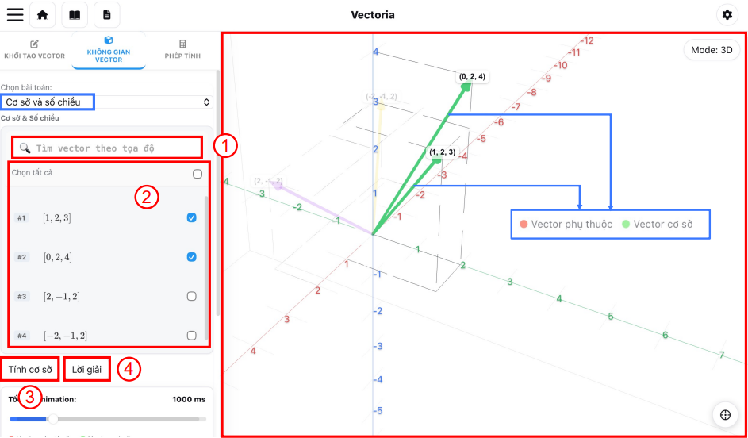
1. Thanh tìm kiếm: Cho phép tìm nhanh vector trong danh sách theo toạ độ. Kết quả tìm kiếm được lọc theo nội dung nhập vào.
2. Khu vực chọn vector: Bạn có thể chọn từng vector bằng cách đánh dấu vào ô tương ứng hoặc chọn tất cả vector bằng tùy chọn Chọn tất cả. Cuộn danh sách để xem đầy đủ các vector. Chỉ các vector được chọn mới được sử dụng trong quá trình kiểm tra.
3. Tính cơ sở: Sau khi chọn hệ vector, nhấn nút này để hệ thống: Xác định một hệ vector cơ sở và tính số chiều của không gian sinh bởi hệ vector đã chọn.
4. Lời giải: Bạn có thể tham khảo hướng dẫn giải một số bài tập về tính cơ sở và số chiều của hệ vector bằng cách bấm vào nút Lời giải.
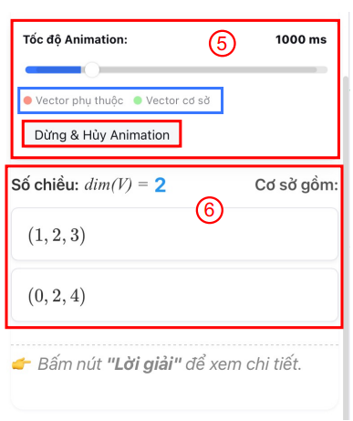
5. Khu vực điều chỉnh Hiệu ứng (Animation): Bạn có thể điều chỉnh tốc độ hiệu ứng bằng cách kéo thanh tốc độ sang trái (tăng tốc độ) hoặc sang phải (giảm tốc độ) và có thể chọn Dừng và Huỷ Hiệu ứng.
6. Khu vực hiển thị kết quả: Kết quả về số chiều và danh sách các vector tạo thành một cơ sở của hệ đã chọn.
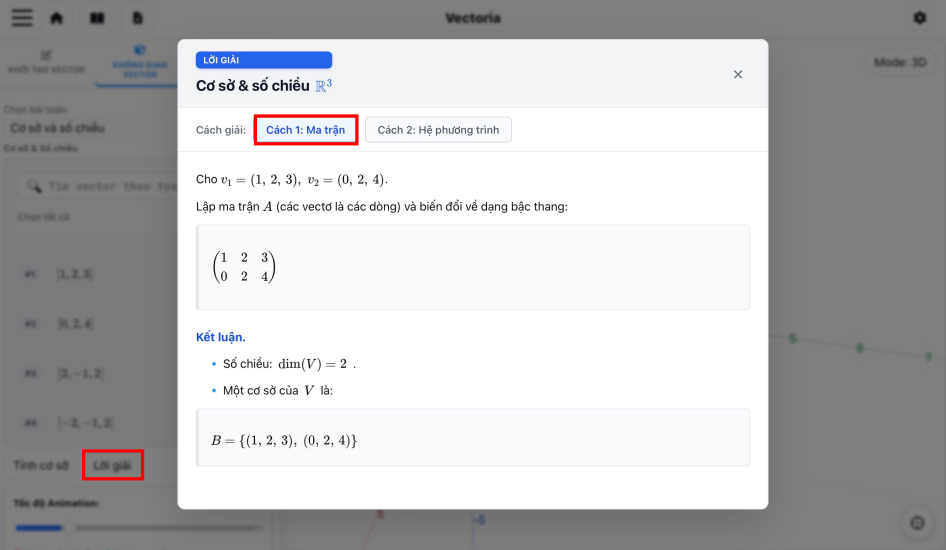
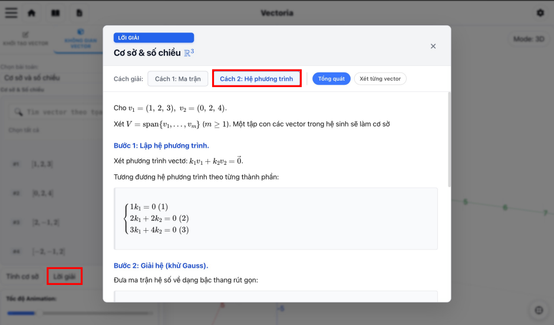
Bạn có thể lựa chọn tham khảo cách tìm cơ sở và số chiều bằng cách bấm vào ô Cách 1: Ma trận hoặc Cách 2: Hệ phương trình. Trong Cách 2 sẽ có 2 lựa chọn là hướng Tổng quát hoặc hướng Xét từng vector
4.4. Bài toán về Toạ độ vector trong cơ sở
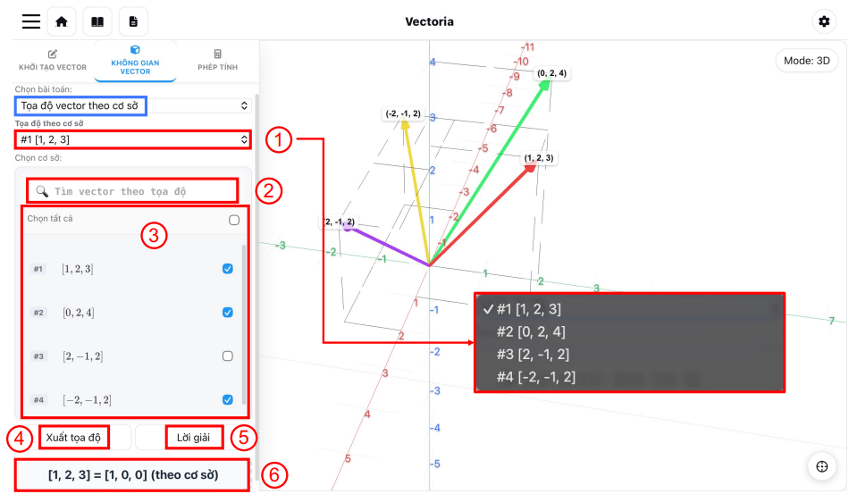
1. Chọn vector muốn tìm toạ độ: Bấm vào thanh này để lựa chọn vector mà bạn muốn tìm toạ độ.
2. Thanh tìm kiếm: Cho phép tìm nhanh vector trong danh sách theo toạ độ. Kết quả tìm kiếm được lọc theo nội dung nhập vào.
3. Khu vực chọn vector: Bạn có thể chọn từng vector bằng cách đánh dấu vào ô tương ứng hoặc chọn tất cả vector bằng tùy chọn Chọn tất cả. Cuộn danh sách để xem đầy đủ các vector. Chỉ các vector được chọn mới được sử dụng trong quá trình kiểm tra.
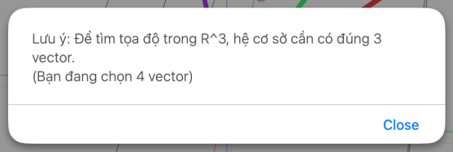
4. Xuất toạ độ: Sau khi chọn được hệ vector, bấm vào nút Xuất toạ độ để thực hiện tính toạ độ của vector theo cơ sở đã chọn. Hệ thống chỉ thực hiện tính toán khi người dùng nhấn nút này.
5. Lời giải: Hiển thị các bước giải chi tiết của quá trình tìm tọa độ vector theo cơ sở. Người dùng có thể theo dõi phương pháp lập hệ phương trình hoặc sử dụng ma trận chuyển cơ sở.
6. Khu vực hiển thị kết quả: Hiển thị toạ độ của vector theo cơ sở đã chọn.
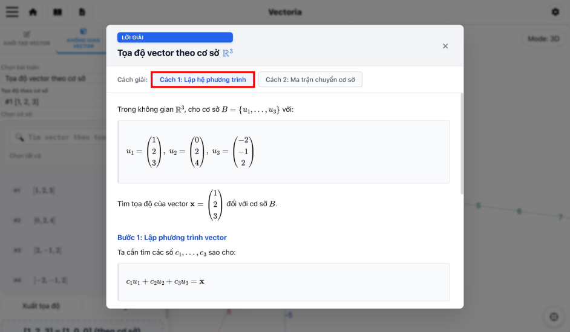
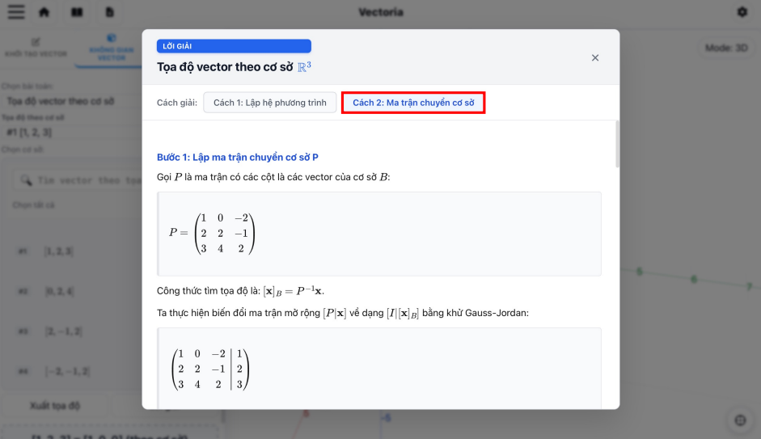
Bạn có thể lựa chọn tham khảo cách tìm toạ độ vector theo cơ sở bằng cách bấm vào ô Cách 1: Lập hệ phương trình hoặc Cách 2: Ma trận chuyển cơ sở.
5. Các phép tính trên vector
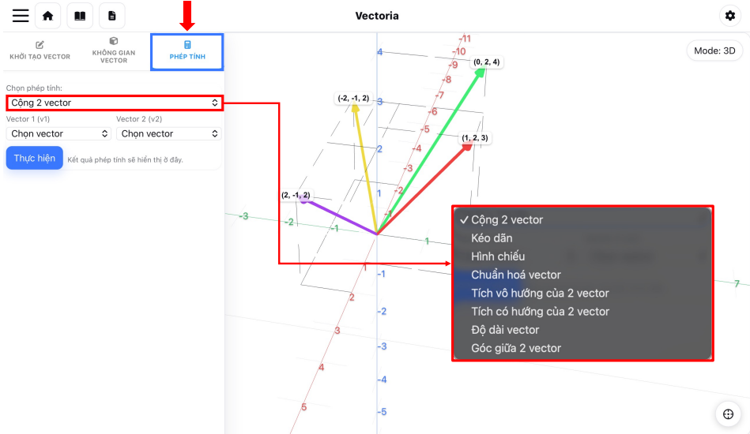
Sau khi thực hiện khởi tạo vector, bạn có thể thực hiện trực quan hoá và thực hiện các phép tính toán trên vector bằng cách bấm vào chức năng Phép tính rồi bấm vào Chọn phép tính để chọn phép tính trên vector mà bạn muốn thực hiện.
5.1. Phép cộng 2 vector
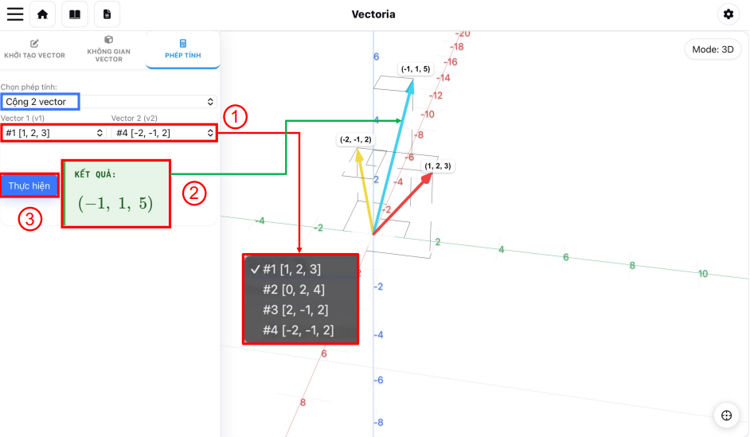
1. Chọn vector: Chọn 2 vector mà bạn muốn thực hiện phép cộng bằng cách bấm vào thanh hiển thị và chọn vector. Chỉ các vector đã được khởi tạo mới xuất hiện trong danh sách.
2. Thực hiện: Sau khi chọn đủ hai vector, nhấn nút này để hệ thống: Tính tổng của hai vector, hiển thị kết quả toạ độ và vẽ vector tổng trên không gian mô phỏng.
3. Khu vực kết quả: Toạ độ của vector tổng sẽ được hiển thị bên cạnh. Vector tổng sẽ được hiển thị ở phần mô phỏng bên phải, đồng thời hệ thống sẽ tự thêm vector tổng vào danh sách các vector.
5.2. Phép kéo dãn vector
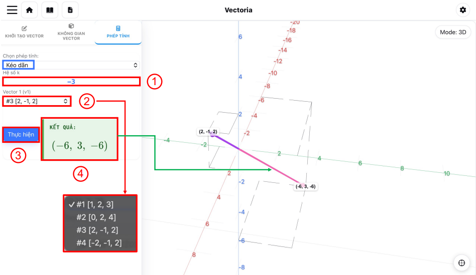
1. Hệ số k: Nhập hệ số kéo dãn k.
2. Chọn vector: Chọn vector mà bạn muốn thực hiện phép kéo dãn bằng cách bấm vào thanh hiển thị và chọn vector. Chỉ các vector đã được khởi tạo mới xuất hiện trong danh sách.
3. Thực hiện: Bấm vào nút này để hệ thống thực hiện kéo dãn vector đã được chọn với hệ số kéo dãn k đã được nhập.
4. Khu vực kết quả: Toạ độ của vector mới (vector sau kéo dãn) sẽ được hiển thị bên cạnh. Vector đó cũng sẽ được hiển thị ở phần mô phỏng bên phải, đồng thời hệ thống sẽ tự thêm vector đó vào danh sách các vector.
5.3. Phép tìm hình chiếu vector
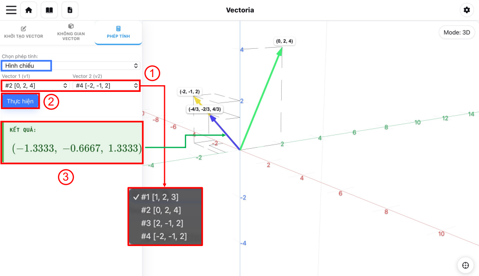
1. Chọn vector: Chọn 2 vector mà bạn muốn thực hiện phép chiếu bằng cách bấm vào thanh hiển thị và chọn vector. Phép chiếu thực hiện chiếu Vector 1 lên Vector 2, nghĩa là thực hiện bài toán "Tìm hình chiếu của vector 1 (v1) lên vector 2 (v2)".
2. Thực hiện: Bấm vào nút này để hệ thống thực hiện tính hình chiếu của vector 1 (v1) lên vector 2 (v2) đã được chọn.
3. Khu vực kết quả: Toạ độ của vector hình chiếu sẽ được hiển thị bên dưới. Vector hình chiếu cũng sẽ được hiển thị ở phần mô phỏng bên phải, đồng thời hệ thống sẽ tự thêm vector đó vào danh sách các vector.
5.4. Phép chuẩn hoá vector
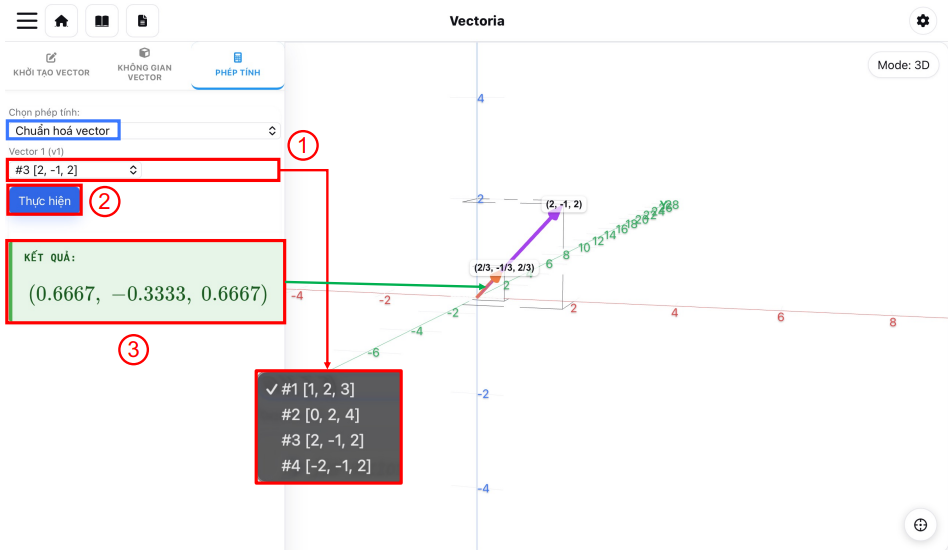
1. Chọn vector: Chọn vector mà bạn muốn thực hiện chuẩn hoá bằng cách bấm vào thanh hiển thị và chọn vector. Chỉ các vector đã được khởi tạo mới xuất hiện trong danh sách.
2. Thực hiện: Bấm vào nút này để hệ thống thực hiện chuẩn hóa vector đã được chọn.
3. Khu vực kết quả: Toạ độ của vector mới (vector đã được chuẩn hoá) sẽ được hiển thị bên dưới. Vector chuẩn hoá cũng sẽ được hiển thị ở phần mô phỏng bên phải, đồng thời hệ thống sẽ tự thêm vector đó vào danh sách các vector.
5.5. Phép tìm tích vô hướng của 2 vector
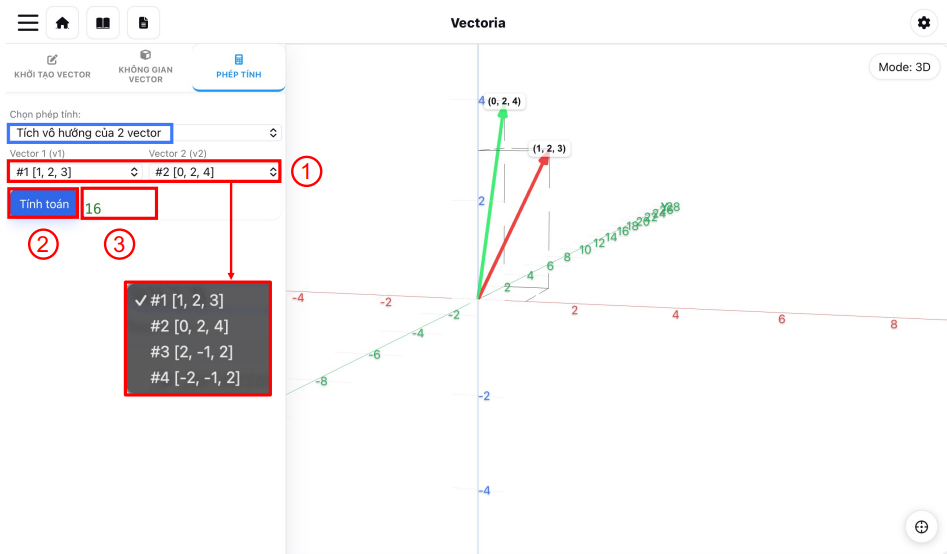
1. Chọn vector: Chọn 2 vector mà bạn muốn thực hiện tính tích vô hướng bằng cách bấm vào thanh hiển thị và chọn vector. Chỉ các vector đã được khởi tạo mới xuất hiện trong danh sách.
2. Tính toán: Bấm vào nút này để hệ thống thực hiện tính tích vô hướng của 2 vector đã chọn.
3. Khu vực kết quả: Tích vô hướng của 2 vector sẽ được hiển thị bên phải.
5.6. Phép tìm tích có hướng của 2 vector
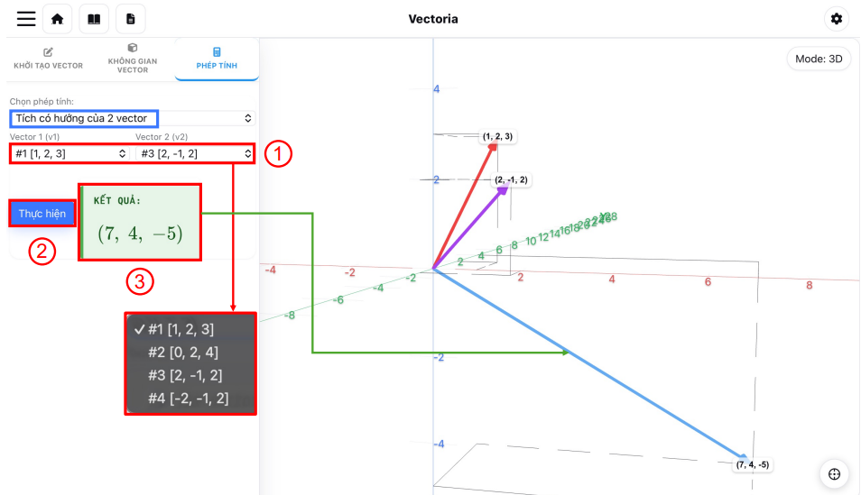
1. Chọn vector: Chọn 2 vector mà bạn muốn thực hiện tìm tích có hướng bằng cách bấm vào thanh hiển thị và chọn vector. Chỉ các vector đã được khởi tạo mới xuất hiện trong danh sách.
2. Tính toán: Bấm vào nút này để hệ thống thực hiện tính tích vô hướng của 2 vector đã chọn.
3. Khu vực kết quả: Toạ độ của vector kết quả sẽ được hiển thị bên dưới. Vector này cũng sẽ được hiển thị ở phần mô phỏng bên phải, đồng thời hệ thống sẽ tự thêm vector vào danh sách các vector.
5.7. Phép tính tìm độ dài của vector
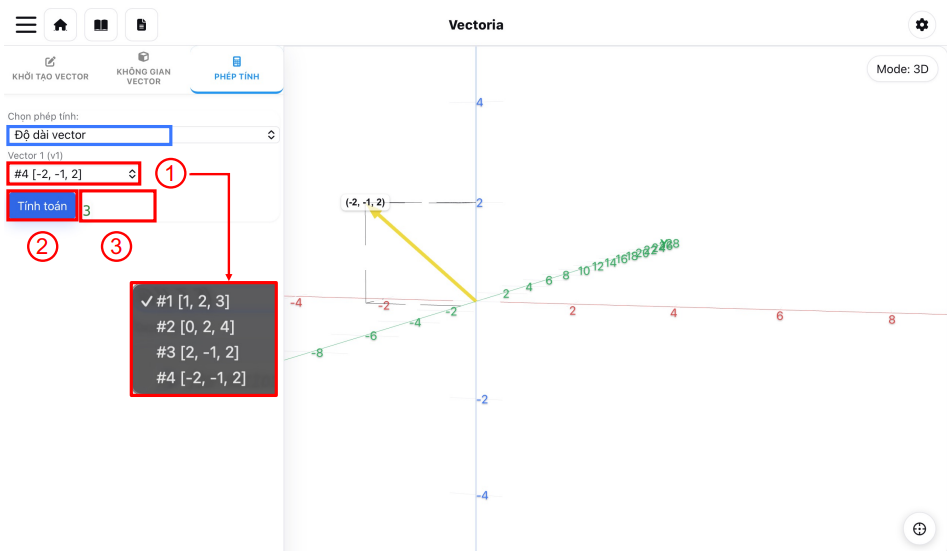
1. Chọn vector: Chọn vector mà bạn muốn thực hiện tính độ dài bằng cách bấm vào thanh hiển thị và chọn vector. Chỉ các vector đã được khởi tạo mới xuất hiện trong danh sách.
2. Tính toán: Bấm vào nút này để hệ thống thực hiện tính độ dài của vector đã chọn.
3. Khu vực kết quả: Độ lớn của vector sẽ được hiển thị ở bên phải.
5.8. Phép tìm góc giữa 2 vector
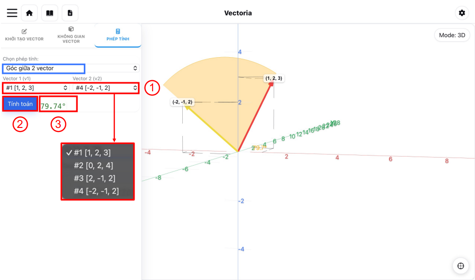
1. Chọn vector: Chọn 2 vector mà bạn muốn thực hiện tìm góc giữa chúng bằng cách bấm vào thanh hiển thị và chọn vector.
2. Tính toán: Bấm vào nút này để hệ thống thực hiện tính góc giữa 2 vector đã được chọn.
3. Khu vực kết quả: Số đo của góc hợp bởi 2 vector sẽ được hiển thị ở bên phải. Góc này cũng sẽ được biểu diễn ở phần mô phỏng bên phải.
TRANG TÌM HIỂU KIẾN THỨC
1. Giao diện trang tổng quan
Trang Kiến thức cung cấp các nội dung giải thích chi tiết về vector, không gian vector, ma trận và các phép toán liên quan, hỗ trợ người dùng hiểu rõ nền tảng lý thuyết trước khi thực hành trên hệ thống.
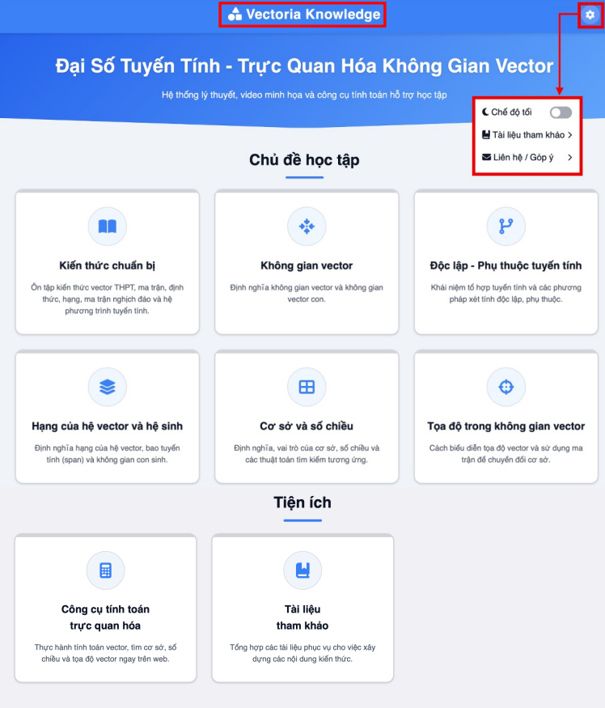
Logo Vectoria Knowledge: Giúp dễ dàng điều hướng về trang chủ ban đầu.
Menu Cài đặt: Góc trên bên phải (biểu tượng bánh răng). Khi nhấn vào biểu tượng này, hệ thống hiển thị bảng tùy chọn gồm:
- Chế độ tối: Bật/ Tắt giao diện nền tối.
- Tài liệu tham khảo: Điều hướng đến danh sách tài liệu học thuật, cung cấp nguồn lý thuyết phục vụ nội dung giảng dạy.
- Liên hệ/ Góp ý: Cho phép gửi phản hồi về nội dung và hỗ trợ báo lỗi hoặc đề xuất cải tiến.
Khu vực “Chủ đề học tập”: Hiển thị các thẻ chuyên đề, gồm các nội dung: Kiến thức chuẩn bị, Không gian vector, Độc lập và phụ thuộc tuyến tính, Hạng của hệ vector và hệ sinh, Cơ sở và số chiều và Toạ độ trong không gian vector.
Khu vực “Tiện ích”: bao gồm các thẻ liên kết trực tiếp đến Công cụ tính toán trực quan và Tài liệu tham khảo.
2. Giao diện Thẻ Kiến thức chuẩn bị
Mỗi thẻ đại diện cho một chuyên đề trong chương trình Đại số tuyến tính. Bạn có thể nhấn vào từng thẻ để truy cập nội dung chi tiết, gồm: Vector ở phổ thông, Ma trận và các phép toán, Định thức, Hạng ma trận, Ma trận nghịch đảo, Hệ phương trình tuyến tính.
Bạn có thể bấm vào thanh Kiến thức chuẩn bị để trở lại giao diện chính của trang Tìm hiểu kiến thức.
3. Giao diện chung của các trang kiến thức
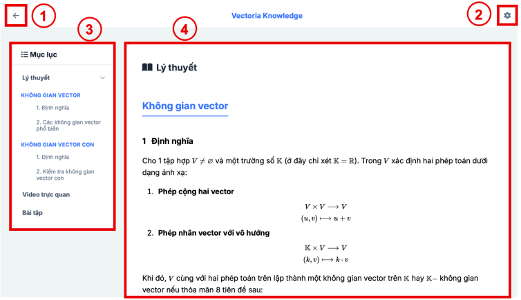
1. Nút Quay lại: Quay về giao diện chính của trang Tìm hiểu kiến thức.
2. Menu Cài đặt: Có thể Bật/ Tắt giao diện nền tối và gửi Liên hệ/ Góp ý.
3. Thanh Mục lục: Hiển thị cấu trúc nội dung của chuyên đề và cho phép điều hướng nhanh giữa các phần.
4. Khu vực Nội dung chính: Hiển thị nội dung học thuật chi tiết và hệ thống. Có bao gồm các ví dụ cụ thể và lời giải tham khảo tương ứng.
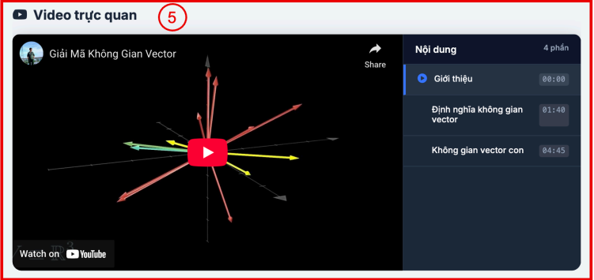
5. Khối Video trực quan: Cung cấp nội dung minh họa trực quan cho phần lý thuyết, hỗ trợ người học tiếp cận khái niệm theo hình ảnh động.
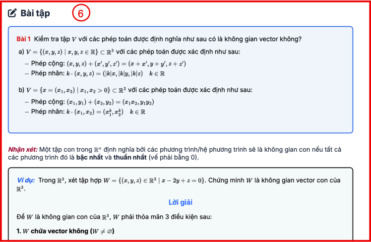
6. Khối Bài tập: Có đề và Lời giải tham khảo giúp củng cố kiến thức. Sau khi hoàn thành các bài tập, bạn có thể thực hiện tải lời giải về để đối chiếu ở phần cuối trang.
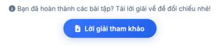